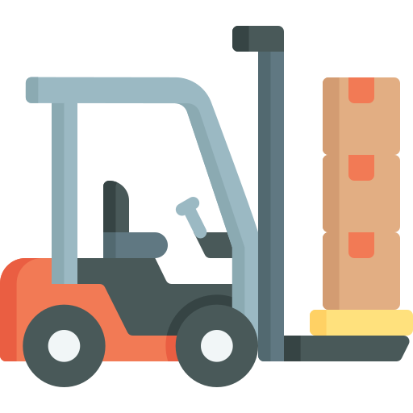

<nav>
  <ul>
    <li></li>
    <li><h1>GPS Dashboard</h1></li>
    <li style="float: right;margin-top: 22px;">{{clock}}</li>
    <li style="float: right;margin-top: 22px;">{{getdisDate()}}</li>
  </ul>

</nav>

<!-- <nav>
    <h1>GPS Dashboard</h1>
    <div class="top-icon">
        <ul>
            <li>
                <a routerlink="/dashboard" href="dashboard"><i class="fas fa-plane" ></i></a>
                <a routerlink="/mission" href="mission"><i class="fas fa-map-marked-alt" ></i></a>
                <a routerlink="/parameter" href="parameter"><i class="fas fa-file-code" ></i></a>
            </li>


        </ul>


    </div>


    <!-- <div class="user"> -->
      <!-- <div class="connect-list">
        <label for="channel"></label>
        <select name="channel" id="channel" [(ngModel)]="connectUsing">
          <option value="serial">Serial Port</option>
          <option value="udp">UDP</option>
        </select>
        <button class="connect-btn" (click)="connect()">
          Connect
        </button>
      </div> -->


        <!-- <ul>
            <li>
                <a id="profile"><i (click)="userPopup()" class="fas fa-user-alt" ></i></a>

            </li>

            <!-- <li><a class="active" href="#" routerLink="/login">Login</a> </li> -->
        <!-- </ul> -->

    <!-- </div> -->


<!-- </nav> -->
